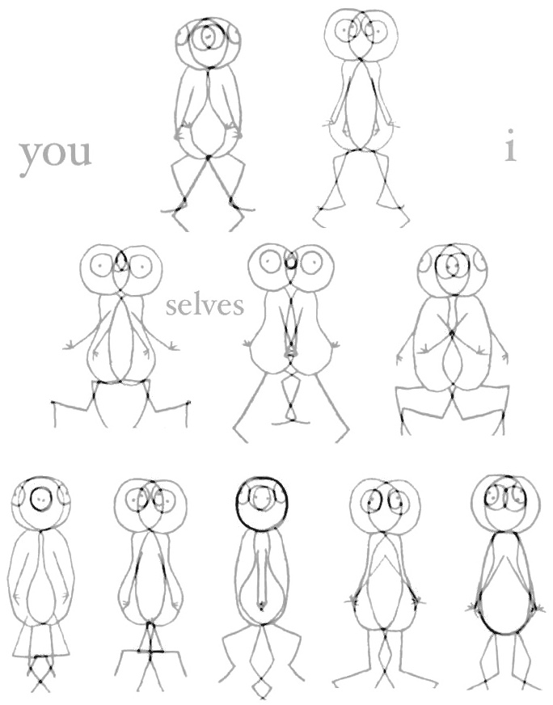

Your browser does not support the video tag.
thesis, antithesis, synthesis with stick figures
隨著事件接踵而至，我跟著發生。
在第四維度的平面上，
從此至那，永不復返—
我是行進波在定點上的震幅，
亦是常動曲 (perpetuum mobile) 裡的一段快速音群。
我無窮動、無窮不動。
雙體本身是神似的，扭動相連的身軀要扯離彼此—
闊別了至親的血肉才發現仍是共生體，
各在遠方卻處處有所牽引。
